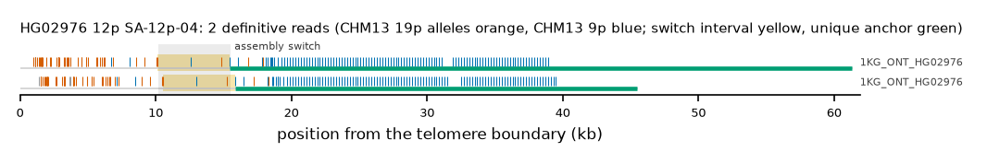

HG02976 12p: SA-12p-04
Claim HG02976|12p|SA-12p-04. All claims
- cohort
- 1000 Genomes ONT
- individual
- HG02976
- haplotype
- hap1
- arm
- 12p
- allele
- SA-12p-04 (foreign)
- model
- donor CHM13 19p, proximal CHM13 9p, recipient CHM13 12p, pattern DP
- claimed end(s)
HG02976#1#CM087103.1#L- assembly switch
- 12,613 bp from the telomere boundary; on CHM13 chr9:19899; own-window projection 10220-15536 bp
- v1 verdict
- confirmed (confirmed)
- definitive tier
- definitive
- reads
- 2 conclusive switch-concordant, 0 discordant, 8 contradicting, 6 consistent; 2 definitive (1KG_ONT_HG02976)
- by tier
- definitive:2;consistent:6;contradicts:8
- source
- https://ftp.1000genomes.ebi.ac.uk/vol1/ftp/data_collections/1KG_ONT_VIENNA/t2t/HG02976.t2t.cram
- note
- confirmed:robust; keep

Conclusive and contradicting reads (10)
6 further reads are consistent (switch test passed, but no terminal telomere, anchor or integrity); they are
listed in reads.tsv.gz. Switch: 95% interval in subtelomere coordinates (kb from the
telomere boundary) and projected on CHM13 9p. Each samtools command prints the read's record
from its public file (CRAM: add the CHM13 v2.0 FASTA as -T).
| read | dataset | tier | length | switch (subtelomere, kb) | switch on CHM13 | donor units / purity | proximal units / purity | anchor (CHM13, MAPQ, unique) | own-assembly best end | fetch |
|---|---|---|---|---|---|---|---|---|---|---|
d2a3ad12-7d76-4755-9329-2e8f68905b74 | 1KG_ONT_HG02976 | definitive | 65,845 | 10.1-15.4 | chr9:14168-19450 | 46 / 0.91 | 108 / 0.98 | chr12:18662-67751, 60, 49.1 kb | HG02976#1#CM087103.1#L (97.6%) ✓ | samtoolssamtools view -F 0x900 -T chm13v2.0.fa.gz -X 'https://ftp.1000genomes.ebi.ac.uk/vol1/ftp/data_collections/1KG_ONT_VIENNA/t2t/HG02976.t2t.cram' 'https://ftp.1000genomes.ebi.ac.uk/vol1/ftp/data_collections/1KG_ONT_VIENNA/t2t/HG02976.t2t.cram.crai' 'chr12:1-5000' | awk -v r='d2a3ad12-7d76-4755-9329-2e8f68905b74' '$1==r' |
47217f93-951a-43a6-a519-7bac2e8a7beb | 1KG_ONT_HG02976 | definitive | 56,869 | 10.5-15.8 | chr9:14155-19450 | 41 / 0.95 | 110 / 0.97 | chr12:18662-51337, 60, 32.7 kb | HG02976#1#CM087103.1#L (96.2%) ✓ | samtoolssamtools view -F 0x900 -T chm13v2.0.fa.gz -X 'https://ftp.1000genomes.ebi.ac.uk/vol1/ftp/data_collections/1KG_ONT_VIENNA/t2t/HG02976.t2t.cram' 'https://ftp.1000genomes.ebi.ac.uk/vol1/ftp/data_collections/1KG_ONT_VIENNA/t2t/HG02976.t2t.cram.crai' 'chr12:1-5000' | awk -v r='47217f93-951a-43a6-a519-7bac2e8a7beb' '$1==r' |
e4f30796-39da-4d76-ab55-643a3d35ad9a | 1KG_ONT_HG02976 | contradicts | 43,665 | 3.8-3.9 | chr9:4907-5027 | 1 / 0.00 | 134 / 0.86 | chr12:12994-42026, 60, 29.0 kb | samtoolssamtools view -F 0x900 -T chm13v2.0.fa.gz -X 'https://ftp.1000genomes.ebi.ac.uk/vol1/ftp/data_collections/1KG_ONT_VIENNA/t2t/HG02976.t2t.cram' 'https://ftp.1000genomes.ebi.ac.uk/vol1/ftp/data_collections/1KG_ONT_VIENNA/t2t/HG02976.t2t.cram.crai' 'chr12:1-5000' | awk -v r='e4f30796-39da-4d76-ab55-643a3d35ad9a' '$1==r' | |
3f8e165f-a4ec-4fcc-a20c-19ad1988285a | 1KG_ONT_HG02976 | contradicts | 42,789 | 3.8-3.9 | chr9:4915-5027 | 1 / 0.00 | 133 / 0.87 | chr12:13008-42066, 60, 29.1 kb | samtoolssamtools view -F 0x900 -T chm13v2.0.fa.gz -X 'https://ftp.1000genomes.ebi.ac.uk/vol1/ftp/data_collections/1KG_ONT_VIENNA/t2t/HG02976.t2t.cram' 'https://ftp.1000genomes.ebi.ac.uk/vol1/ftp/data_collections/1KG_ONT_VIENNA/t2t/HG02976.t2t.cram.crai' 'chr12:1-5000' | awk -v r='3f8e165f-a4ec-4fcc-a20c-19ad1988285a' '$1==r' | |
c5b09b8c-3a43-4e07-bf90-e6b49518960c | 1KG_ONT_HG02976 | contradicts | 44,639 | 3.9-4.0 | chr9:4902-5027 | 1 / 0.00 | 141 / 0.87 | chr12:12867-43537, 60, 30.7 kb | samtoolssamtools view -F 0x900 -T chm13v2.0.fa.gz -X 'https://ftp.1000genomes.ebi.ac.uk/vol1/ftp/data_collections/1KG_ONT_VIENNA/t2t/HG02976.t2t.cram' 'https://ftp.1000genomes.ebi.ac.uk/vol1/ftp/data_collections/1KG_ONT_VIENNA/t2t/HG02976.t2t.cram.crai' 'chr12:1-5000' | awk -v r='c5b09b8c-3a43-4e07-bf90-e6b49518960c' '$1==r' | |
b3da90a8-3d1a-48b1-bcdf-dbb6c9bae057 | 1KG_ONT_HG02976 | contradicts | 38,719 | 2.5-2.6 | chr9:4913-5027 | 1 / 0.00 | 94 / 0.83 | chr12:14272-33689, 60, 19.4 kb | samtoolssamtools view -F 0x900 -T chm13v2.0.fa.gz -X 'https://ftp.1000genomes.ebi.ac.uk/vol1/ftp/data_collections/1KG_ONT_VIENNA/t2t/HG02976.t2t.cram' 'https://ftp.1000genomes.ebi.ac.uk/vol1/ftp/data_collections/1KG_ONT_VIENNA/t2t/HG02976.t2t.cram.crai' 'chr12:1-5000' | awk -v r='b3da90a8-3d1a-48b1-bcdf-dbb6c9bae057' '$1==r' | |
75cf262f-d986-4f4f-8537-1843e4e5186f | 1KG_ONT_HG02976 | contradicts | 36,772 | 4.4-4.5 | chr9:4919-5027 | 1 / 0.00 | 98 / 0.83 | chr12:12458-34754, 60, 22.3 kb | samtoolssamtools view -F 0x900 -T chm13v2.0.fa.gz -X 'https://ftp.1000genomes.ebi.ac.uk/vol1/ftp/data_collections/1KG_ONT_VIENNA/t2t/HG02976.t2t.cram' 'https://ftp.1000genomes.ebi.ac.uk/vol1/ftp/data_collections/1KG_ONT_VIENNA/t2t/HG02976.t2t.cram.crai' 'chr12:1-5000' | awk -v r='75cf262f-d986-4f4f-8537-1843e4e5186f' '$1==r' | |
1c9a8dd4-fba6-48a9-9bb8-8af324bc655a | 1KG_ONT_HG02976 | contradicts | 54,952 | 3.6-3.7 | chr9:4915-5027 | 1 / 0.00 | 150 / 0.89 | chr12:13170-54642, 60, 41.5 kb | samtoolssamtools view -F 0x900 -T chm13v2.0.fa.gz -X 'https://ftp.1000genomes.ebi.ac.uk/vol1/ftp/data_collections/1KG_ONT_VIENNA/t2t/HG02976.t2t.cram' 'https://ftp.1000genomes.ebi.ac.uk/vol1/ftp/data_collections/1KG_ONT_VIENNA/t2t/HG02976.t2t.cram.crai' 'chr12:1-5000' | awk -v r='1c9a8dd4-fba6-48a9-9bb8-8af324bc655a' '$1==r' | |
15e9f207-3398-4b6a-861b-eeaffb45200a | 1KG_ONT_HG02976 | contradicts | 26,830 | 1.7-1.8 | chr9:4907-5027 | 1 / 0.00 | 78 / 0.77 | chr12:15096-27954, 60, 12.9 kb | samtoolssamtools view -F 0x900 -T chm13v2.0.fa.gz -X 'https://ftp.1000genomes.ebi.ac.uk/vol1/ftp/data_collections/1KG_ONT_VIENNA/t2t/HG02976.t2t.cram' 'https://ftp.1000genomes.ebi.ac.uk/vol1/ftp/data_collections/1KG_ONT_VIENNA/t2t/HG02976.t2t.cram.crai' 'chr12:1-5000' | awk -v r='15e9f207-3398-4b6a-861b-eeaffb45200a' '$1==r' | |
ac35e1da-5e52-46f3-8567-58d8fe2cc1ce | 1KG_ONT_HG02976 | contradicts | 35,167 | 3.6-3.8 | chr9:4917-5027 | 1 / 0.00 | 94 / 0.81 | chr12:13211-33679, 60, 20.5 kb | samtoolssamtools view -F 0x900 -T chm13v2.0.fa.gz -X 'https://ftp.1000genomes.ebi.ac.uk/vol1/ftp/data_collections/1KG_ONT_VIENNA/t2t/HG02976.t2t.cram' 'https://ftp.1000genomes.ebi.ac.uk/vol1/ftp/data_collections/1KG_ONT_VIENNA/t2t/HG02976.t2t.cram.crai' 'chr12:1-5000' | awk -v r='ac35e1da-5e52-46f3-8567-58d8fe2cc1ce' '$1==r' |
Files
CRAM/BAM on CHM13 v2.0, BAM on the person's own assembly windows and the window FASTA: release asset subtel_read_evidence_v1_1KG_ONT.tar.gz, directory read_evidence_v1/1KG_ONT/HG02976__12p__SA-12p-04/ (downloads).
Re-derive this verdict
git clone https://github.com/jlanej/human-subtelomere-atlas && cd human-subtelomere-atlas
evidence/replicate_claim.sh 'HG02976|12p|SA-12p-04'The script fetches the cited reads from the public source by region and read ID, re-runs the frozen criteria and compares every per-read and claim verdict with this page (details).